CoPilot: AI-разбор security-проверок CoPilot: AI-assisted security review workflow
Спроектировала рабочий процесс, который делает многоэтапный AI-анализ понятным: от запуска проверки и отслеживания обработки до разбора evidence и финального решения эксперта. I designed a workflow that makes multi-stage AI analysis understandable — from configuring a check and monitoring processing to reviewing evidence and making the final expert decision.
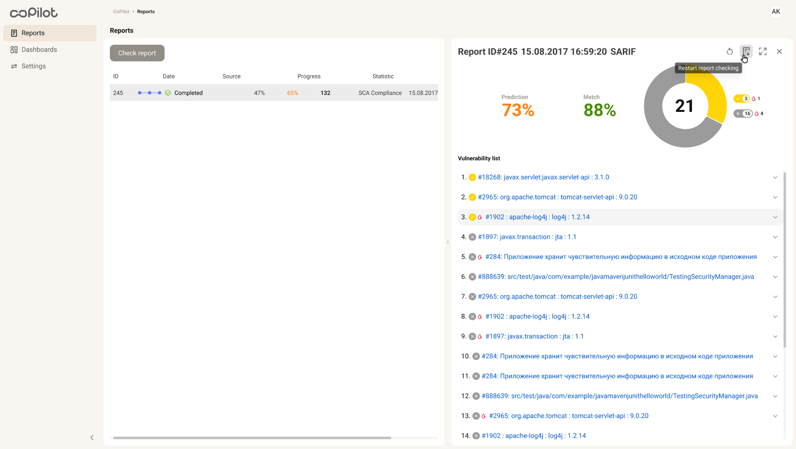
КонтекстOverview
Security analysis редко даёт простой ответ «да / нет». Одна проверка проходит несколько этапов обработки, возвращает вероятностные сигналы и может создать большой список потенциальных проблем. Даже после завершения автоматического анализа финальное решение остаётся за специалистом. Security analysis rarely produces a simple yes-or-no answer. A check can pass through several processing stages, return probabilistic signals and create a large set of potential issues. Even after automated analysis is complete, the final decision still belongs to a specialist.
Моя задача была не просто показать больше данных, а сделать систему понятной в трёх ключевых моментах: My task was not to expose more data, but to make the system understandable at three critical moments:
ПроблемаThe problem
Автоматический анализ уязвимостей асинхронный и вероятностный. Пользователю нужно понимать, на каком этапе находится проверка, что именно уже обработано, где произошёл сбой и чем автоматическая prediction отличается от подтверждённой человеком уязвимости. Automated vulnerability analysis is asynchronous and probabilistic. Users need to understand where a check is, what has already been processed, where something failed and how a machine prediction differs from a vulnerability validated by a human.
- Показать долгий процесс без «магического» loading state.Communicate a long-running process without a magical loading state.
- Разделить машинный прогноз и человеческий verdict.Separate machine prediction from a human verdict.
- Помочь быстро просматривать и приоритизировать большое число находок.Help experts scan and prioritise a large number of findings.
- Безопасно оформить действия, которые влияют на будущие сканы.Make actions that affect future scans explicit and safe.
- Спроектировать failed, skipped, empty и partial states как часть основного продукта.Treat failed, skipped, empty and partial states as part of the core product.
Модель сценарияMapping the workflow
Я строила опыт вокруг реального decision flow, а не вокруг отдельных экранов. Это разделило продукт на два режима: monitoring — понять состояние системы; reviewing — оценить результат и принять решение. I structured the experience around the actual decision flow rather than individual screens. This separated two modes: monitoring — understanding the system state; reviewing — evaluating the result and making a decision.
01 Контроль до запуска проверки Giving users control before processing starts
Разные форматы данных и режимы анализа влияют на результат. Вместо того чтобы прятать эти параметры в настройках, я собрала значимые решения в один понятный setup: выбрать исходный отчёт, определить режим проверки и запустить анализ. Different data formats and analysis modes affect the result. Instead of hiding those options in settings, I grouped the meaningful choices into one setup step: select the source report, choose the check mode and start the analysis.
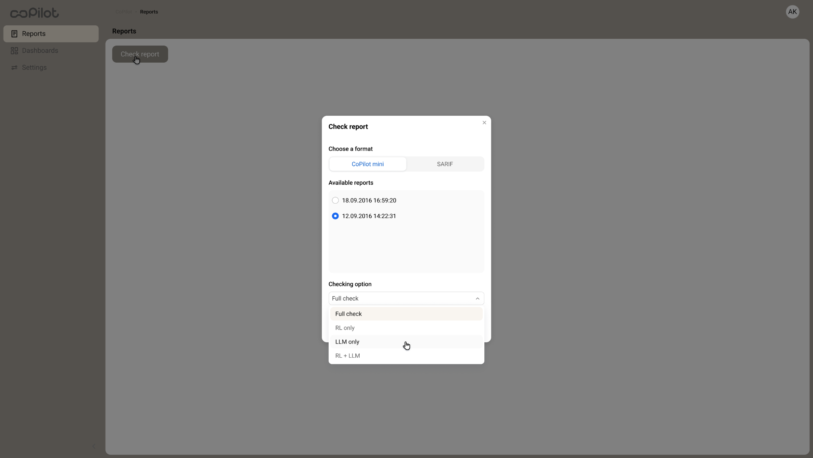
02 Прозрачный asynchronous processing Making asynchronous processing visible
Обычный progress bar скрывал бы слишком много. Если обработка замедлится или остановится, эксперт не поймёт, нужно ждать или вмешаться. Поэтому я представила pipeline явно и определила семантические состояния для каждого этапа. A generic progress bar would hide too much. If processing slowed down or stopped, an expert would not know whether to wait or intervene. I represented the pipeline explicitly and defined semantic states for every stage.
Waiting · In progress · Completed · Skipped · Failed · Broken
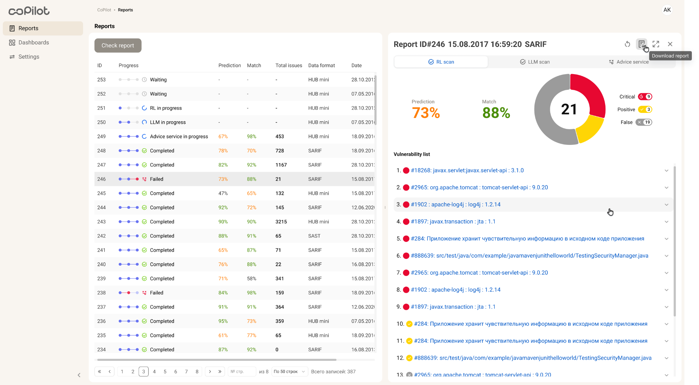
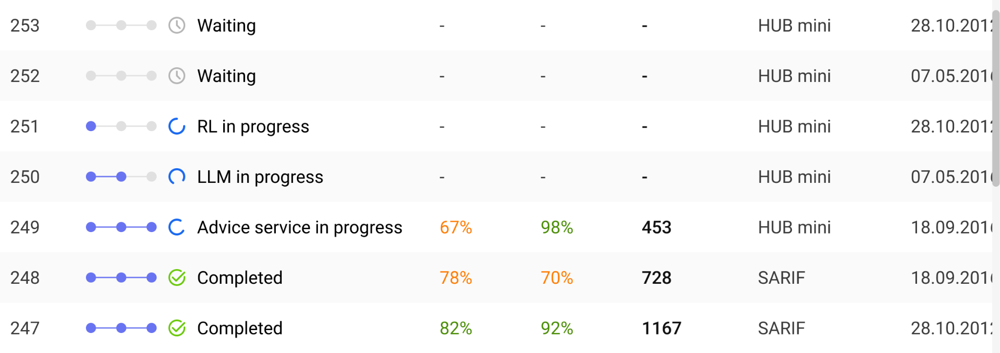
03 От результата к investigation Moving from a result to an investigation
Summary помогает сориентироваться, но решение требует evidence. В detailed view я выстроила иерархию между тем, что предполагает система, что реально найдено, какой статус уже присвоен и какое действие доступно дальше. A summary helps with orientation, but a decision requires evidence. In the detailed view I created a hierarchy between what the system predicts, what was actually found, the current review status and the action available next.
- system predictionsystem prediction
- finding + technical parametersfinding + technical parameters
- review state and contextreview state and context
- next expert actionnext expert action
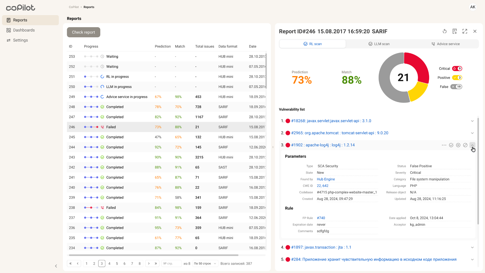
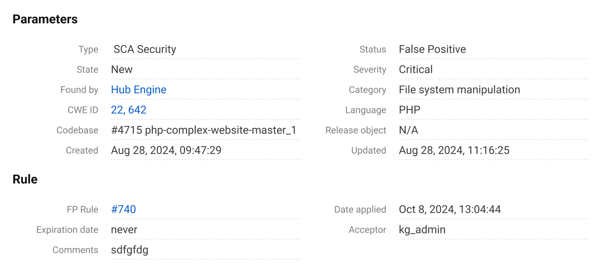
AI предлагает. Эксперт решает.AI suggests. The expert decides.
04 Human in the loop Keeping the human in the loop
Автоматическая классификация не должна выглядеть как окончательный verdict. Я разделила prediction и человеческое решение как два разных объекта: система помогает сузить внимание и собрать evidence, но confirm / decline / ignore делает эксперт. Automated classification should not look like a final verdict. I treated prediction and the human decision as two different objects: the system narrows attention and assembles evidence, while an expert confirms, declines or ignores the finding.
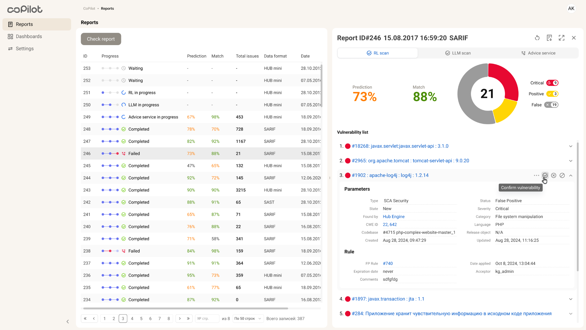
05 Действия с последствиями для будущих сканов Designing for actions with future consequences
Ignore влияет не только на текущий экран: объект может быть исключён из последующих проверок. Поэтому я отделила такое действие от обычного dismiss, добавила явное подтверждение последствий и отдельный feedback state после применения. Ignore affects more than the current screen: an object may be excluded from later checks. I therefore treated it differently from a simple dismiss, added explicit confirmation of the consequence and a separate feedback state after the action is applied.
Intent → Confirmation → System feedback
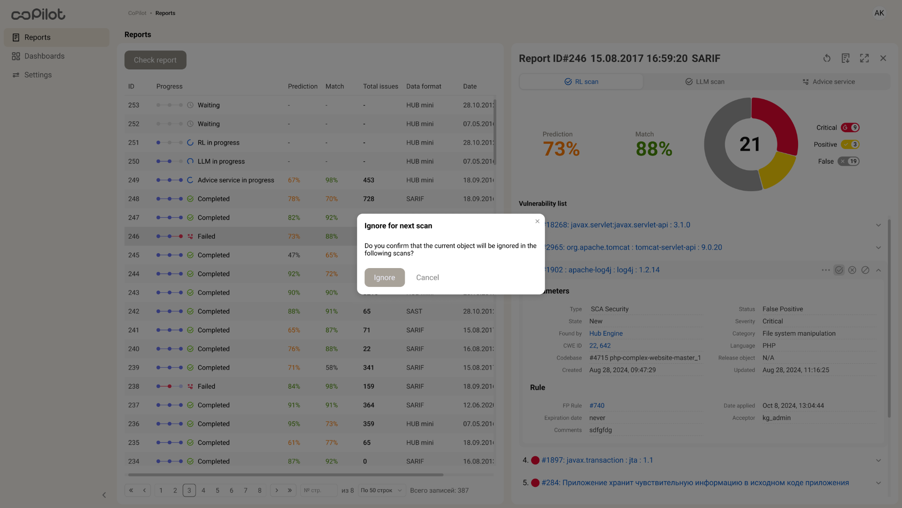
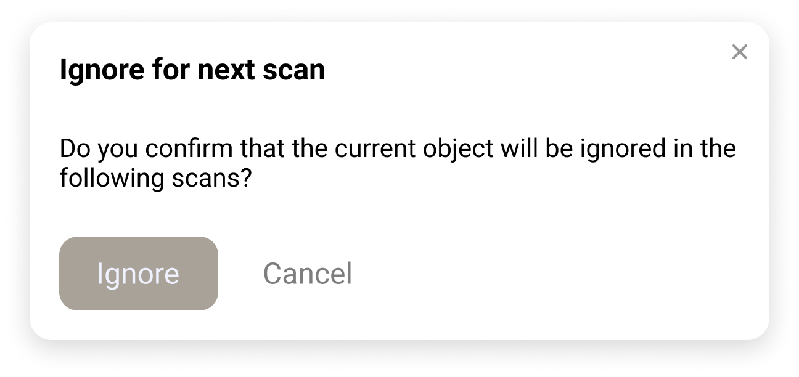
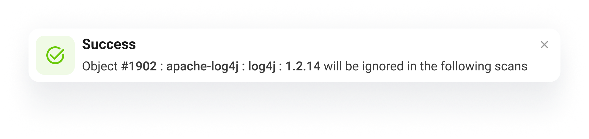
Beyond the happy pathBeyond the happy path
Для асинхронного security-продукта edge cases — это основной опыт, а не редкие исключения. Я описала состояния active, waiting, completed, skipped, failed, broken, empty и zero-value и использовала одну логику на уровне pipeline, отчёта и отдельной находки. For an asynchronous security product, edge cases are part of the primary experience. I defined active, waiting, completed, skipped, failed, broken, empty and zero-value states and reused the same logic across the pipeline, the report and an individual finding.
System thinkingSystem thinking
Количество комбинаций состояний быстро делает screen-by-screen подход неуправляемым. Поэтому я проектировала не отдельные экраны, а набор семантических patterns для processing stages, connectors, counters, severity и validation states. The number of state combinations quickly makes a screen-by-screen approach unmanageable. I designed semantic patterns for processing stages, connectors, counters, severity and validation states instead of solving every screen independently.
Состояние должно не просто выглядеть иначе — у него должно быть однозначное продуктовое значение.A state should not just look different — it needs a clear product meaning.
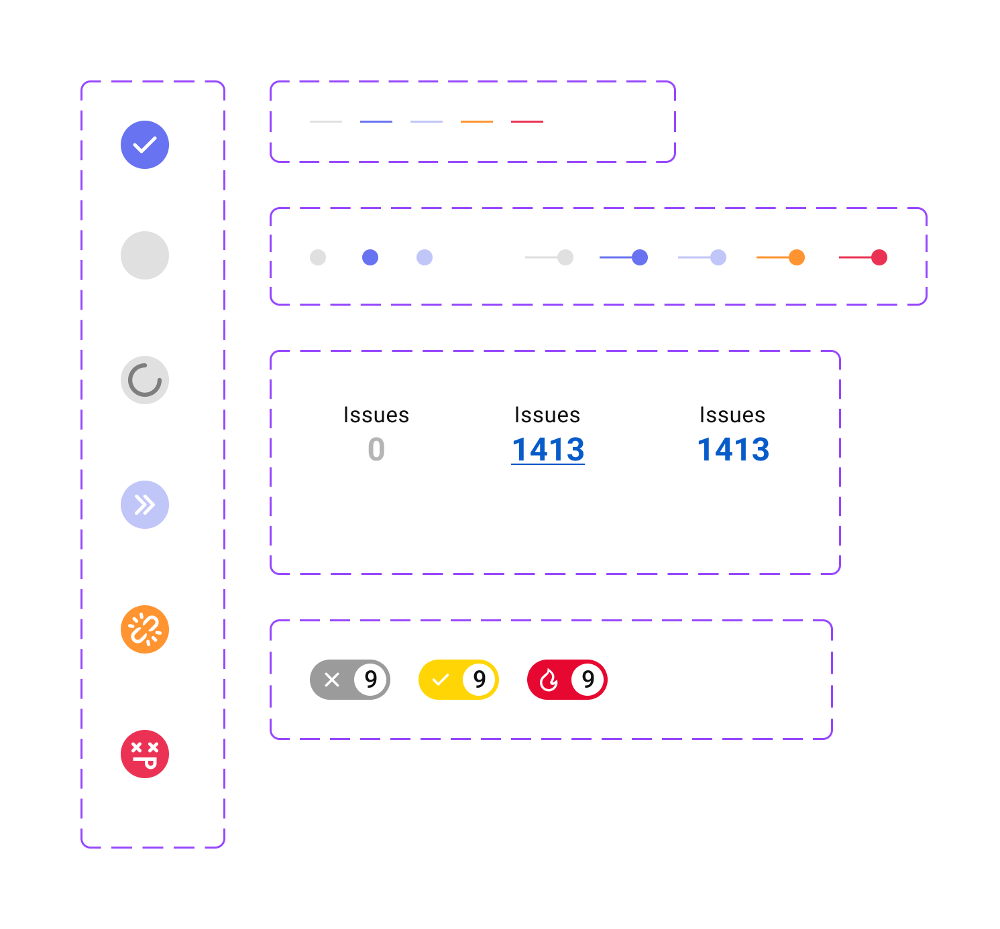
Что показывает этот кейсWhat this case demonstrates
Делаю сложные системы понятнымиMaking complex systems understandable
Перевела многоэтапный backend process в state model, который пользователь может читать и контролировать.I translated a multi-stage backend process into a state model users can understand and monitor.
Проектирую для экспертных решенийDesigning for expert decisions
Разделила автоматические сигналы и человеческую валидацию, построив flow вокруг evidence и последствий действий.I separated automated signals from human validation and structured the flow around evidence and the consequences of actions.
Думаю системами, а не отдельными экранамиThinking in systems
Определила reusable states и interaction patterns, чтобы сложность продукта масштабировалась без новых визуальных правил для каждого сценария.I defined reusable states and interaction patterns so product complexity could scale without inventing a new visual rule for every scenario.
РезультатOutcome
Дизайн описывает end-to-end CoPilot workflow: от настройки анализа и чтения processing states до investigation отдельной находки и экспертного решения. Параллельно был сформирован переиспользуемый state model для реализации интерфейса. The design defines the end-to-end CoPilot workflow — from configuring analysis and reading processing states to investigating an individual finding and making the expert decision — together with a reusable state model for implementation.
Что я вынеслаWhat I learned
Сложность не исчезает, когда мы упрощаем интерфейс — её нужно структурировать. Самая важная часть этой работы была не в том, чтобы уменьшить число состояний, а в том, чтобы определить их смысл, связи и последствия достаточно чётко для уверенного решения пользователя. Complexity does not disappear when we simplify an interface — it has to be structured. The most useful design work was not reducing the number of states, but defining their meaning, relationships and consequences clearly enough for users to make confident decisions.